전자산업기사 (2004-05-23 기출문제)
1과목: 전자회로
1. 펄스부호변조(PCM)에 대한 설명 중 옳지 않은 것은?
- 점유 주파수 대역이 넓다.
- PCM 고유의 잡음이 발생한다.
- 전송 방해가 많은 통신로에서도 전송 품질이 좋은 통신이 가능하다.
- 정보는 펄스 유曺무의 조합패턴으로 전달되기 때문에 펄스형이 조금 찌그러지면 펄스의 유曺무 검출이 올바르다 해도 정보는 정확히 보낼 수 없다.
(정답률: 63%)

2. 궤환 증폭기의 구조 중 그림과 같은 것을 무엇이라고 하는가?
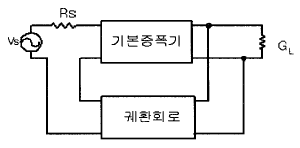
- 전압-병렬
- 전류-직렬
- 전압-직렬
- 전류-병렬
(정답률: 28%)
3. 회로의 대역 폭(Band Width)을 결정하는 소자에 대한 올바른 문장은? (단, Tr의 표유용량 및 접합용량은 무시한다.)
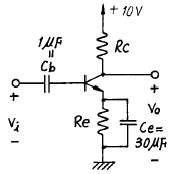
- Cb는 주로 저역 차단주파수(Low cutoff frequency)를 결정한다.
- Ce는 주로 저역 차단주파수(Low cutoff frequency)를 결정한다.
- Rc는 주로 고역 차단주파수 (High cutoff frequency)를 결정한다.
- Re는 주로 고역 차단주파수 (High cutoff frequency)를 결정한다.
(정답률: 45%)
4. 그림과 같은 증폭기에서 Re에 병렬로 바이패스 콘덴서를 접속하면?
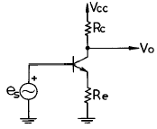
- 발진한다.
- 이득이 감소한다.
- 이득이 증가한다.
- 잡음이 증가한다.
(정답률: 48%)
5. 링(ring) 변조기의 용도는?
- 단일 측파대 발생
- 주파수 변조
- 위상 변조
- 펄스 변조
(정답률: 71%)
6. 입력신호 10[mV]를 가했을때에 제 2 차 고조파 왜율 10[%]를 발생하고 10[W]를 부하에 공급하는 증폭기가 있다. 이 증폭기를 사용하여 40[dB]의 전압 직렬궤환을 걸고 출력을 그대로 10[W]로 유지하려면 왜율은 얼마나 되겠는가? (단, 증폭기 전압이득은 60[dB]이다.)
- Df≒0.01%
- Df≒0.1%
- Df≒0.001%
- Df≒1%
(정답률: 24%)
7. 그림과 같이 1[㏀] 저항과 다이오드의 직렬 회로에서 전압 VD의 크기는 대략 얼마인가?
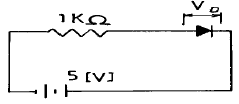
- 0[V]
- 0.1[V]
- 0.6[V]
- 5[V]
(정답률: 69%)
8. 비안정 멀티바이브레이터의 동작 원리를 설명한 것 중 옳지 않은 것은?
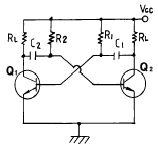
- 발진회로의 일종이다.
- 두개의 트랜지스터는 차단 상태와 포화상태를 번갈아 바꾸는 동작을 한다.
- 2단 R-C 결합 증폭기를 이루고 있다.
- Q1과 Q2가 한동작 상태에 머무는 시간은 결합 용량과 부하 저항으로 결정된다.
(정답률: 63%)
9. 그림의 게이트(gate)는? (단, 정논리인 경우이다.)
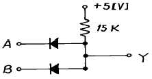
- AND
- NAND
- OR
- NOR
(정답률: 37%)
10. 플립플롭(Flip-Flop)과 관계없는 것은?
- Latch
- Decoder
- Register
- Counter
(정답률: 75%)
11. J-K 플립플롭을 사용하여 D 플립플롭을 만들려고 한다. 필요한 게이트(gate)는?
- AND
- NOT
- OR
- EX-OR
(정답률: 65%)
12. 트랜지스터의 정특성에서 VCE=7.5[V]일때 IB=100[μA]에서 250[μA]까지 변화시켰더니 VBE=0.2[V]에서 0.3[V]로 되었다고 한다. 이 트랜지스터의 hie는?
- 777[Ω]
- 667[Ω]
- 475[Ω]
- 377[Ω]
(정답률: 58%)
13. 3초과 코드(Excess-3 code)는 어떻게 구성하는가?
- 8421 코드에 6을 더한 코드
- 8421 코드에 3을 더한 코드
- 착오 교정 해밍 코드
- 착오 검출 코드
(정답률: 91%)
14. 그림과 같은 회로의 출력 전압은 약 얼마인가? (단, 다이오드의 커트인 전압은 0.6V이고, 도전하는 다이오드 양단의 전압 강하는 0.7V이다.)
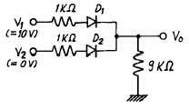
- 10 V
- 9.5 V
- 8.9 V
- 8.4 V
(정답률: 14%)
15. 그림과 같은 회로에서 출력 전압은? (단, R1 = R2 이고, R3 = R4 이다.)
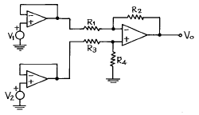
- V1 - V2
- V2 - V1
- V1 - 2V2
- 2V2 - V1
(정답률: 72%)
16. 다음 회로의 교류 부하선의 기울기는?
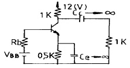
- -1/2000
- -1/1500
- -1/1000
- -1/500
(정답률: 73%)
17. 이득이 40[dB]의 저주파증폭기에서 0.092의 전압부궤환을 걸면 안걸었을 때에 비해 의율은 어떻게 되는가?
- 12.4% 개선
- 9.8% 개선
- 8.2% 개선
- 5.6% 개선
(정답률: 48%)
18. 다음은 증폭기에서 발생하는 일그러짐(distortion)의 종류들이다. 이 중 진폭 일그러짐에 가장 큰 영향을 미치는 것은?
- 주파수 일그러짐
- 비직선 일그러짐
- 지연 일그러짐
- 위상 일그러짐
(정답률: 10%)
19. 그림과 같은 OP Amp의 완전한 평형 조건은?
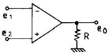
- e1=e2=e0
- e1=e2, e0=0
- e1≠ e2, e0=0
- e1≠ e2, e0=∞
(정답률: 52%)
20. 다음 그림의 변조도는 약 몇 (%)인가? (단, A = 10[V], B = 5[V], C = 2.5[V]이다.)
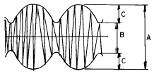
- 10
- 33
- 66
- 80
(정답률: 71%)
2과목: 전기자기학 및 회로이론
21. 한변의 길이가 a[m]인 정 6각형의 꼭지점에 Q[C]의 전하를 각각 놓았을 때 정6각형 중심의 전계의 세기는 몇 V/m인가?
- 3Q/2πɛoa
- 3Q/2πɛoa2
- 0
- 3Q/4πɛoa
(정답률: 34%)
22. 그림과 같은 이상 변압기에서 권선비 n1 : n2 = 1 : 2이고, RL=800[Ω]일 때 입력 측에서 본 등가 임피던스 Ri는 몇 [Ω]인가?
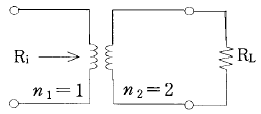
- 100
- 200
- 800
- 1600
(정답률: 65%)
23. 그림과 같은 2개의 동심구에서 내구의 반지름이 a[m], 외구의 안지름이 b[m], 외구의 바깥지름이 c[m]일 때 전위계수 P11을 구하면?
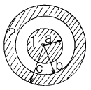
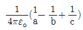
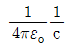
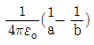
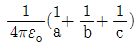
(정답률: 72%)
24. 그림의 회로가 정저항 회로가 되려면 L은 몇 [H]인가? (단, R=20[Ω] , C=200[㎌]이다.)
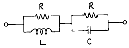
- 0.08
- 0.8
- 1
- 10
(정답률: 70%)
25. 일정한 정현파 전류가 일정한 용량을 갖는 인덕터의 양단에 인가되고 있다. 만약, 인덕터의 인덕턴스가 증가되었을 경우 이 때의 유도전압은?
- 감소한다.
- 변화가 없다.
- 증가한다.
- 차단된다.
(정답률: 57%)
26. 물의 유전률을 ε, 투자율을 μ라 할 때 물속에서의 전파속도는 몇 m/s 인가?
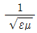
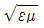
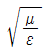
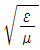
(정답률: 66%)
27. 선형 회로망에 가장 관계가 있는 것은?
- 렌츠의 법칙
- 중첩의 원리
- 키르히호프의 법칙
- 플레밍의 왼손법칙
(정답률: 64%)
28. 진공의 유전률 107/4πC2과 같은 값은 몇 F/m 인가? (단, C 는 광속도라 한다.)
- 8.855×10-10
- 8.855×10-12
- 9×109
- 36×109
(정답률: 71%)
29. 어떤 콘덴서가 누설이 없다면 이 콘덴서의 소모 전력은 어떻게 되겠는가?(오류 신고가 접수된 문제입니다. 반드시 정답과 해설을 확인하시기 바랍니다.)
- 무한대가 된다.
- 인가전압의 제곱에 비례한다.
- 콘덴서 용량에 비례한다.
- 항상 0 이 된다.
(정답률: 15%)
30. 그림과 같은 회로망 전압비의 전달함수 G(jω)는? (단, e(t)는 정현파이다.)
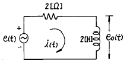
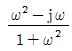
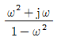
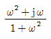
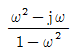
(정답률: 19%)
31. 영구 쌍극자 모멘트를 갖고 있는 분자가 외부 전계에 의하여 배열되므로서 일어나는 전기분극 현상은?
- 쌍극자 연면분극
- 전자분극
- 쌍극자 배향분극
- 이온분극
(정답률: 48%)
32. 그림과 같은 시간 함수를 라플라스 변환하면?
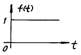
- 1
- S
- 1/S
- 1/S-1
(정답률: 92%)
33. 자기인덕턴스가 각각 L1[H], L2[H]이고 상호인덕턴스가 M[H]인 두 회로의 결합계수가 1 이면 자기인덕턴스와 상호인덕턴스의 관계는?
- L1L2=M
- L1L2=M2
- 1/L1L2=M
- 1/L1L2=M2
(정답률: 80%)
34. 분포정수 회로에서 전파 정수를 읕, 선로의 특성 임피던스를 Zo라 할 때 선로의 직렬 임피던스 Z는?
- γZo
- Zo /γ
- γ/Zo2
- γ/Zo
(정답률: 40%)
35. 60[C/S], 100[V]의 교류 전압을 200[Ω] 전구에 인가할 때 소비되는 평균 전력은 몇 [W]인가?
- 5
- 15
- 50
- 60
(정답률: 30%)
36. 그림과 같은 회로의 임피던스 행렬에서 임피던스 파라미터 Z21은?
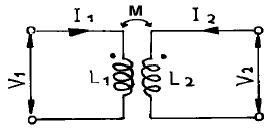
- SL1
- SL2
- SM
- SL1L2
(정답률: 64%)
37. 그림과 같은 회로망 가지에서 I4의 값은?
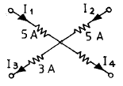
- 5 A
- 3 A
- 7 A
- 10 A
(정답률: 64%)
38. 그림과 같이 공극이 있는 철심 자기회로에 500AT의 기자력을 가한 경우 자속
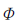
는 몇 Wb 인가? (단, 철심의 비투자율 μs=1000, 공극간격 Ig=10mm이고, 누설자속은 없으며, 공극에서 자속의 퍼짐은 고려 하지 않는다.)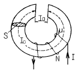
- 1.185×10-4
- 1.185×10-5
- 2.370×10-4
- 2.370×10-5
(정답률: 45%)
39. 용량이 0.03μF인 평판 공기콘덴서에 극판과 수직되게 판면적의 1/2되는 유리판을 삽입하였을 때 정전용량은 몇 μF 인가? (단, 유리의 비유전율은 10 이다.)
- 0.015
- 0.065
- 0.165
- 0.15
(정답률: 28%)
40. 그림과 같이 반지름 a인 원의 일부(3/4 원)에 반무한장 직선을 연결시키고 화살표 방향으로 전류 I[A]가 흐를 때 부분 원의 중심 0점의 자계의 세기는 몇 AT/m 인가?
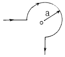
- 0
- 3I/4πa
- 3I/4a
- 3I/8a
(정답률: 25%)
3과목: 전자계산기일반
41. computer system 내부에서 system의 상태를 기록하고 있는 특별한 word를 무엇이라 하는가?
- PSW
- CCW
- CAW
- CSW
(정답률: 74%)
42. 명령(instruction)의 형식에 있어서 연산수(주소의 개수)에 의한 분류시 해당되지 않는 것은?
- 1 주소 방식
- 2 주소 방식
- 3 주소 방식
- 4 주소 방식
(정답률: 86%)
43. 양방향성 버스(bus)인 것은?
- 어드레스 버스(address bus)
- I/O 포트 버스(I/O port bus)
- 제어 버스(control bus)
- 데이터 버스(data bus)
(정답률: 88%)
44. 산술과 논리 동작의 결과가 축적되는 레지스터는?
- RAM
- 스테이터스 레지스터
- 어큐뮬레이터
- 인덱스 레지스터
(정답률: 70%)
45. 연산 명령이 아닌 것은?
- ADD
- JMP
- XOR
- AND
(정답률: 83%)
46. 비휘발성 기억 소자가 아닌 것은?
- RAM
- ROM
- 자기 코어
- 자기 버블
(정답률: 46%)
47. 단항(unary) 연산이 아닌 것은?
- COMPLEMENT
- SHIFT
- ROTATE
- XOR
(정답률: 74%)
48. 코딩을 하면 바로 프로그램이 작성될 수 있을 정도로 가장 세밀하게 그려진 순서도는?
- 개략 순서도
- 상세 순서도
- 시스템 순서도
- 처리 순서도
(정답률: 75%)
49. 어셈블리 언어로 프로그램을 작성할 때 절대번지 대신에 간단한 기호 명칭을 사용할 수 있는데 이러한 번지를 무엇이라 하는가?
- 자기 번지(self address)
- 기호 번지(symbolic address)
- 상대 번지(relative address)
- 기호 상대 번지(symbolic relative address)
(정답률: 72%)
50. Read와 Write가 가능한 주기억 장치 소자로 기억 상태를 유지하기 위해 주기적으로 재생 전원이 필요한 반도체 기억 장치는?
- DRAM
- SRAM
- ROM
- PROM
(정답률: 58%)
51. 시스템 소프트웨어에 해당되지 않는 것은?
- 운영체제
- 컴파일러
- 유틸리티 프로그램
- 패키지 프로그램
(정답률: 58%)
52. 순서도(Flow Chart)를 작성하는 이유 중 옳지 않은 것은?
- 논리적 체계의 파악이 쉽다.
- 기호 내부 작업 내용은 영문자만을 사용한다.
- 문제 해결의 과정을 한눈에 파악할 수 있다.
- 문제의 분석이 분명해지며 다른 사람에게 처리과정을 이해시키기 쉽다.
(정답률: 80%)
53. 인터럽트를 발생하는 장치들을 직렬로 연결하여 우선 순위에 따라 처리하게 하는 방식은?
- 다중채널 방식
- Daisy-chain 방식
- Polling 방식
- Interrupt Control 방식
(정답률: 66%)
54. 584를 3초과 code로 표시하면 어떻게 되는가?
- 1010 0110 0100
- 1000 1011 0111
- 0101 1100 0010
- 0101 1001 0111
(정답률: 42%)
55. Flow chart의 기호 중 합병(merge)의 기호는?
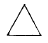
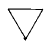
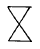
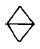
(정답률: 22%)
56. 스택 구조에 관한 설명 중 옳지 않은 것은?
- CPU가 가지고 있는 활용도가 높은 기법이다.
- 지수를 세는 번지 레지스터를 가진 메모리이며, 이 레지스터에 다른 값들도 저장할 수 있다.
- 읽고 쓰는 것이 가능하다.
- 스택에서 꺼내는 동작을 Push라 한다.
(정답률: 66%)
57. 서브루틴(subroutine) 사용시 관계없는 용어는?
- POP
- PC
- PUSH
- AC
(정답률: 53%)
58. 마이크로컴퓨터의 입∙출력 구성 요소가 아닌 것은?
- 입∙출력 인터페이스
- 입∙출력 포트(port)
- 버스
- 디코더
(정답률: 72%)
59. 10진수의 29를 BCD 코드로 표시하면?
- 00101001
- 00011101
- 00101110
- 00010110
(정답률: 63%)
60. 기억장치내의 지정된 주소에서 첫 번째 명령어가 기억 장치에 호출되어 해독되는 과정을 무엇이라고 하는가?
- Fetch cycle
- Execute cycle
- 해독 주기
- 로드 주기
(정답률: 52%)
4과목: 전자계측
61. 오실로스코프(Oscilloscope)로 파형 관측 시 톱니파를 피측정 전압에 동기시키는 이유는?
- 파형을 수직 이동시키기 위하여
- 파형을 확대시키기 위하여
- 휘도를 밝게 하기 위하여
- 파형을 정지시키기 위하여
(정답률: 77%)
62. 싱크로스코프의 수평편향판 간에 EH, 수직편향판 간에 EV 인 정현파 전압을 각각 인가시켜 나타나는 리서쥬(Lissajous) 도형은? (단, EH=Em sin(ω t-π/2 ), Ev=Em sin ωt)
- 타원
- 원
- 직선
- 8자 모양
(정답률: 78%)
63. 마이크로파 측정에서 정재파 비가 2일 때 반사 계수는?
- 1/2
- 1/3
- 1/ 4
- 1/5
(정답률: 76%)
64. 다음과 같은 블록도를 갖는 측정은 무슨 특성을 측정하고 자 하는 것인가?
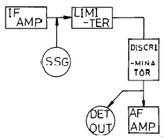
- 진폭 제한기의 특성 측정
- 주파수 변별기의 특성 측정
- 저주파 증폭기의 특성 측정
- 중간주파 증폭기의 특성 측정
(정답률: 72%)
65. 소인 발진기는 다음 중 어느 것에 해당하는가?
- 주기적으로 전압이 변화한다.
- 주기적으로 위상이 변화한다.
- 주기적으로 전류가 변화한다.
- 주기적으로 주파수가 반복한다.
(정답률: 46%)
66. 소인 발진기(sweep oscillator)의 용도가 아닌 것은?
- 광대역 증폭기의 조정
- 주파수 변별기의 측정 및 조정
- 수신기의 중간주파 증폭기의 특성 측정 및 조정
- 순시 주파수 편이 제어 회로(IDC) 측정 및 조정
(정답률: 40%)
67. 계기 정수 2400[회/kWh]의 적산 전력계가 30초에 10회전 했을 때의 전력은?
- 1250[W]
- 1000[W]
- 750[W]
- 500[W]
(정답률: 29%)
68. 저주파 발진기 중 주파수 안정도가 제일 좋은 것은?
- 음차 발진기
- CR 발진기
- 구형파 발진기
- beat 주파 발진기
(정답률: 54%)
69. 그리드 딥 미터의 특징으로 옳지 않은 것은?
- 감도, 확도가 높다.
- 주파수 범위로 1.5-300[㎒]이다.
- LC로 구성된 공진회로, 송신기, 수신기 회로 조정에 사용된다.
- 그리드 전류계가 dip 될 때 동조 다이얼의 주파수 눈금을 읽는다.
(정답률: 41%)
70. 정류형 계기의 특징으로 옳지 않은 것은?
- 전압계는 고전압용으로 적합하다.
- 가동코일용 계기를 사용하므로 감도가 높다.
- 정류방식은 브리지형 전파 정류방식을 사용한다.
- 피측정파형이 정현파가 아니면 파형오차를 초래한다.
(정답률: 37%)
71. 동조형 주파수계에 속하지 않는 것은?
- 그리드 딥 미터
- 공동형 파장계
- 헤테로다인 주파수계
- 흡수형 주파수계
(정답률: 50%)
72. SN비를 옳게 나타낸 것은?
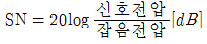
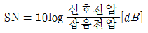
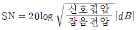
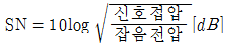
(정답률: 77%)
73. 그림과 같은 회로에서 브리지 평형이 되어 검류계 G가 0을 가르켰을 때 Rx의 값은?
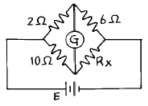
- 1.2[Ω]
- 12[Ω]
- 14[Ω]
- 30[Ω]
(정답률: 76%)
74. 그림과 같은 등가회로로 표시할 수 있는 콘덴서의 유전체 역률 tanδ 를 나타내는 식 중 옳은 것은?
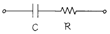
- tanδ =ωCR
- tanδ =1/ωCR
- tanδ =ωC
- tanδ =ωR
(정답률: 78%)
75. 오실로스코프(Oscilloscope)로 측정 할 수 없는 것은?
- 변조도 측정
- 위상 측정
- 왜곡율 측정
- 코일의 Q
(정답률: 84%)
76. 다음 저항 감쇄기 중 평형형은?
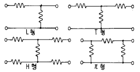
- L형
- T형
- H형
- π 형
(정답률: 66%)
77. 오실로스코프의 동기 방법이 아닌 것은?
- 내부 동기
- 전원 동기
- 외부 동기
- 신호 동기
(정답률: 67%)
78. 직사각형파 펄스를 가하여 저주파 특성을 측정하는 경우 이득이 낮은 주파수에서 감소하는 출력 파형은?
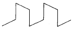
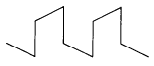
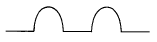
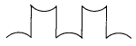
(정답률: 34%)
79. 계수형 주파수계의 특징이 옳지 않은 것은?
- 온도에 의한 영향이 없다.
- 조작이 간단하고, 결과가 숫자로 나타난다.
- 계수 방식 특유의 ±1 count 오차가 발생한다.
- 미약한 신호의 피측정 주파수도 정확히 측정할 수있다.
(정답률: 71%)
80. 가장 적은 저항을 측정할 수 있는 브리지는?
- 빈 브리지
- 휘스톤 브리지
- 캘빈 더블 브리지
- 메거
(정답률: 79%)